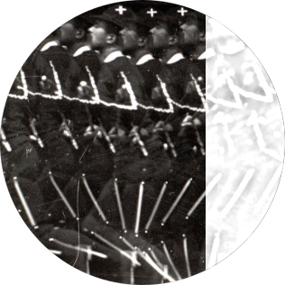
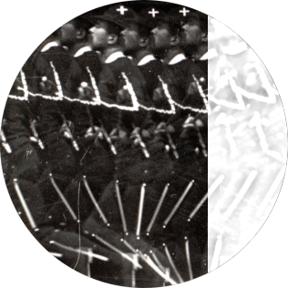
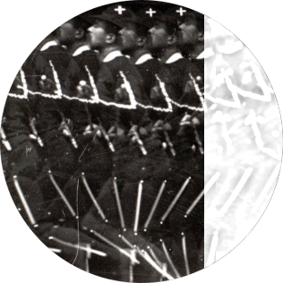
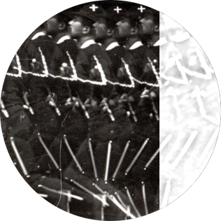

I am currently a Researcher at the Kavli Institute for Systems Neuroscience/CNC in Norway, where I completed my PhD under the supervision of Jonathan Whitlock.
In my graduate work, I used a combination of electrophysiological, optogenetic and computational methods to study how associative cortices encode body posture in freely moving rats. A part of this project was published in Science magazine in November 2018. If curious, you can consult this press release or read my popsci rendition of the story.
I am broadly interested in computational neuroethology, a burgeoning field invested in making sense of large streams of data that offer a detailed quantitative account of animal behavior in conjunction with neural recordings and manipulations. The challenge ahead is to characterize the specifics of how the brain represents parameters related to natural behavior during unrestrained bodily motion, especially during social interaction.
Some of my favorite pastimes include literature, python, Manchester United and pisco sour.